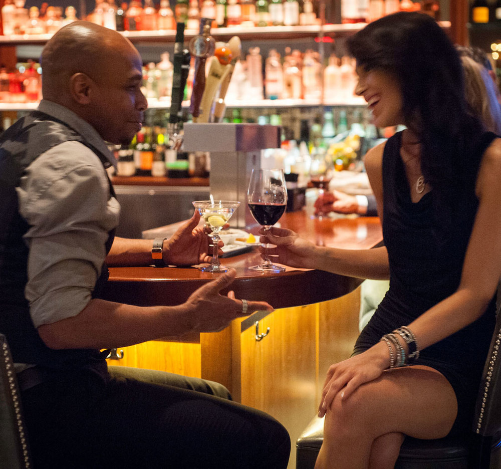

In a fast-food, chain-driven, cookie-cutter world, it’s hard to find a true original. A restaurant that proudly holds its ground and doesn’t scamper after every passing trend. Since 1946, Murray’s has been that place. Whether you’re looking for a classic cocktail crafted from local spirits or a nationally acclaimed steak, we welcome you. Come in and discover the unique mash-up of new & true that draws people to our landmark location—and keeps them coming back for more.
